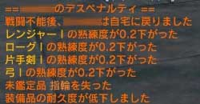

敵との戦闘中にHPが0になると戦闘不能となります。
戦闘不能となると、「ホームへ戻ります」というダイアログが表示され、「OK」を押すと自分のホームに戻ります。
戦闘不能になると、デスペナルティーを食らいます。
デスペナルティーとは、
・ステータスの減少
・スキルレベルの減少
・武器レベルの減少
・装備品の耐久力低下
・未鑑定アイテムの紛失
のことです。未鑑定アイテムが無い場合をのぞいて全てを食らいます。しかもランクが高いほど減少する割合は高くなりますので注意が必要です。
例を挙げると、スキルランクが1の時は0.2前後ですが、ランク2となると0.5前後、ランク3では0.前後、ランク4では1.0減少します。
また装備品の耐久力は、戦闘不能になる前の半分となります。
 |
|